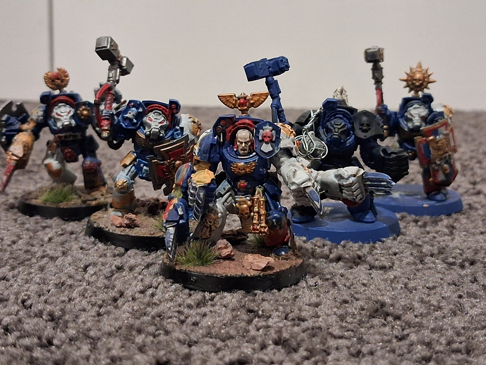

Battle Report
The Siege of Emberfall
A brutal three-turn clash in the ruins, where a single veteran squad held the line long enough to win the objective and save the day.
Hobby Log
Painting, gaming, and stories from the table
This is my little corner of the hobby: progress logs, painted miniatures, battlefield stories, and the chaos of getting better one model at a time.

Current project
Latest entries
A brutal three-turn clash in the ruins, where a single veteran squad held the line long enough to win the objective and save the day.
A practical breakdown of my process for building contrast, texture, and clean highlights on armour plates and weapons.
A quick update on my current army build, what I’ve learned from repainting older units, and where the next batch is headed.
Current projects
Painting a small squad of Space Marines in their assault terminator armor for my chapter of space marines.

Painting a small squad of Tau pathfinders with hand sculpted capes and a distinct blue and white colour scheme.

Painting a single Space Marine Apothecary with a focus on the medical equipment and the distinctive white and red color scheme. With 2 magnetized weapons and a distinctive kit, this battle brother is ready to help his brothers in battle.

Finished work


Behind the scenes
My own custom space marine chapter, led by the PRIMARCH NAHDREN who was the 2nd primarch created. He was thought to be lost but now he stays hidden behind the ruse of chapter master.
Cursed warriors bound to eternal war, their red armor a beacon in the darkness. They fight where hope is lost, where victory is impossible—and yet they prevail.
The greater good calls across the stars. These Tau run seperate from the ethereals and fight with the farsight enclave, their weapons honed by philosophy and fire. Allies and enemies alike respect their discipline.
Crude, brutal, and unstoppable. The Orks of my WAAAGH! charge headlong into battle, united by a primal force that turns their chaotic nature into devastating momentum. They speed into combat and with each dead enemy, their momentum grows. WAAAGH!
From beyond the galactic rim comes the creatures of my hive fleet. A nightmare for all who face them. Each model represents an apex predator, a monster that turns battlefields into feeding grounds.
Every army has a story. Every painting session adds a chapter. These are tales of glory, defeat, near-victories, and the bonds forged in hobby and gaming.
A galaxy far, far away
Beyond the grim darkness of the far future lies another universe—one of epic space opera, lightsaber duels, and legendary heroes. Wizards of the Coast's Star Wars miniatures bring this galaxy to life on the tabletop, and I'm building my own collection of forces across the Rebellion, Empire, and bounty hunters.
Each miniature comes with a unique card that details its abilities, stats, and special rules. These cards are essential for gameplay and strategy. I have many of these cards and am open to trades and offers for the ones I don't have. Reach out if you want to trade or sell!
Although I have many cards, I do not have any models. I am looking to acquire any models, and I am open to trades or purchases. If you have any Star Wars miniatures that you are willing to trade or sell, please reach out to me!
Bloo Milk is an amazing Star Wars Minature website, it has a vibrant community of SWM players and has made the latest Virtual-Sets. There are many amazing features such as a squad creator and a card database. I highly recommend checking it out!
About the blog
I’m a hobbyist who likes to document every stage of the process: the painting mistakes, the lucky wins, and the games that become legends. This blog is where I collect it all.
“The best armies aren’t built in a day. They’re built in the small, stubborn acts of showing up.”
— The Chronicles of the Hobby Desk